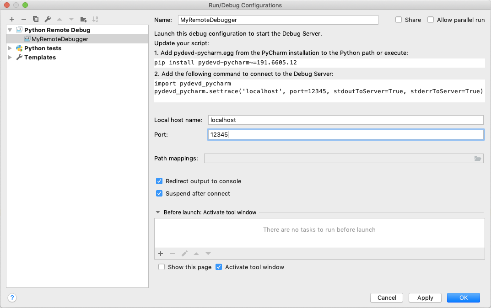
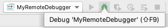
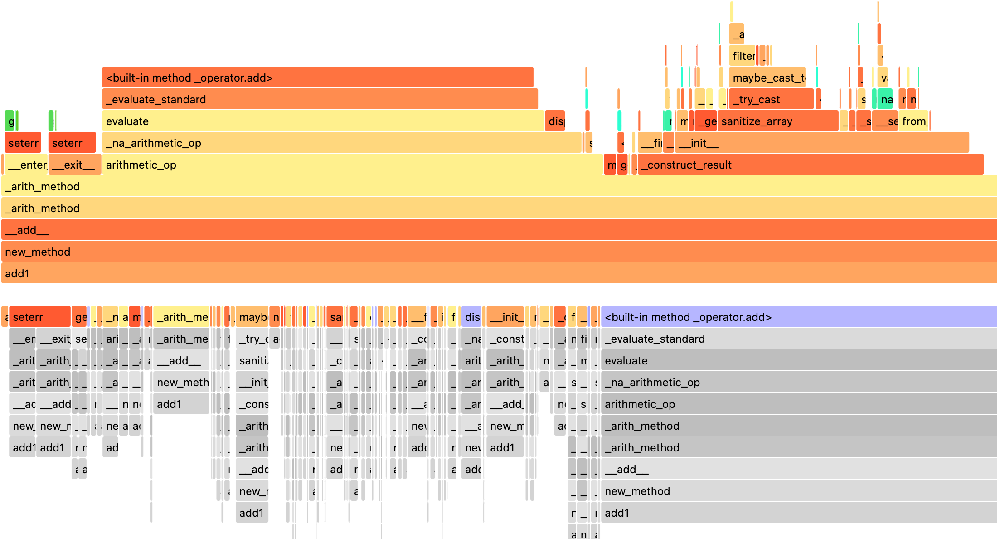

Debugging PySpark#
PySpark uses Spark as an engine. PySpark uses Py4J to leverage Spark to submit and computes the jobs.
On the driver side, PySpark communicates with the driver on JVM by using Py4J.
When pyspark.sql.SparkSession or pyspark.SparkContext is created and initialized, PySpark launches a JVM
to communicate.
On the executor side, Python workers execute and handle Python native functions or data. They are not launched if a PySpark application does not require interaction between Python workers and JVMs. They are lazily launched only when Python native functions or data have to be handled, for example, when you execute pandas UDFs or PySpark RDD APIs.
This page focuses on debugging Python side of PySpark on both driver and executor sides instead of focusing on debugging with JVM. Profiling and debugging JVM is described at Useful Developer Tools.
Note that,
If you are running locally, you can directly debug the driver side via using your IDE without the remote debug feature. Setting PySpark with IDEs is documented here.
There are many other ways of debugging PySpark applications. For example, you can remotely debug by using the open source Remote Debugger instead of using PyCharm Professional documented here.
Remote Debugging (PyCharm Professional)#
This section describes remote debugging on both driver and executor sides within a single machine to demonstrate easily. The ways of debugging PySpark on the executor side is different from doing in the driver. Therefore, they will be demonstrated respectively. In order to debug PySpark applications on other machines, please refer to the full instructions that are specific to PyCharm, documented here.
Firstly, choose Edit Configuration… from the Run menu. It opens the Run/Debug Configurations dialog.
You have to click + configuration on the toolbar, and from the list of available configurations, select Python Debug Server.
Enter the name of this new configuration, for example, MyRemoteDebugger and also specify the port number, for example 12345.

pydevd-pycharm package in all the machines which will connect to your PyCharm debugger. In the previous dialog, it shows the command to install.pip install pydevd-pycharm~=<version of PyCharm on the local machine>
Driver Side#
To debug on the driver side, your application should be able to connect to the debugging server. Copy and paste the codes
with pydevd_pycharm.settrace to the top of your PySpark script. Suppose the script name is app.py:
echo "#======================Copy and paste from the previous dialog===========================
import pydevd_pycharm
pydevd_pycharm.settrace('localhost', port=12345, stdoutToServer=True, stderrToServer=True)
#========================================================================================
# Your PySpark application codes:
from pyspark.sql import SparkSession
spark = SparkSession.builder.getOrCreate()
spark.range(10).show()" > app.py
Start to debug with your MyRemoteDebugger.

spark-submit app.py
Executor Side#
To debug on the executor side, prepare a Python file as below in your current working directory.
echo "from pyspark import daemon, worker
def remote_debug_wrapped(*args, **kwargs):
#======================Copy and paste from the previous dialog===========================
import pydevd_pycharm
pydevd_pycharm.settrace('localhost', port=12345, stdoutToServer=True, stderrToServer=True)
#========================================================================================
worker.main(*args, **kwargs)
daemon.worker_main = remote_debug_wrapped
if __name__ == '__main__':
daemon.manager()" > remote_debug.py
You will use this file as the Python worker in your PySpark applications by using the spark.python.daemon.module configuration.
Run the pyspark shell with the configuration below:
pyspark --conf spark.python.daemon.module=remote_debug
Now you’re ready to remotely debug. Start to debug with your MyRemoteDebugger.
spark.range(10).repartition(1).rdd.map(lambda x: x).collect()
Checking Resource Usage (top and ps)#
The Python processes on the driver and executor can be checked via typical ways such as top and ps commands.
Driver Side#
On the driver side, you can get the process id from your PySpark shell easily as below to know the process id and resources.
>>> import os; os.getpid()
18482
ps -fe 18482
UID PID PPID C STIME TTY TIME CMD
000 18482 12345 0 0:00PM ttys001 0:00.00 /.../python
Executor Side#
To check on the executor side, you can simply grep them to figure out the process
ids and relevant resources because Python workers are forked from pyspark.daemon.
ps -fe | grep pyspark.daemon
000 12345 1 0 0:00PM ttys000 0:00.00 /.../python -m pyspark.daemon
000 12345 1 0 0:00PM ttys000 0:00.00 /.../python -m pyspark.daemon
000 12345 1 0 0:00PM ttys000 0:00.00 /.../python -m pyspark.daemon
000 12345 1 0 0:00PM ttys000 0:00.00 /.../python -m pyspark.daemon
...
Profiling Memory Usage (Memory Profiler)#
memory_profiler is one of the profilers that allow you to check the memory usage line by line.
Driver Side#
Unless you are running your driver program in another machine (e.g., YARN cluster mode), this useful tool can be used
to debug the memory usage on driver side easily. Suppose your PySpark script name is profile_memory.py.
You can profile it as below.
echo "from pyspark.sql import SparkSession
#===Your function should be decorated with @profile===
from memory_profiler import profile
@profile
#=====================================================
def my_func():
session = SparkSession.builder.getOrCreate()
df = session.range(10000)
return df.collect()
if __name__ == '__main__':
my_func()" > profile_memory.py
python -m memory_profiler profile_memory.py
Filename: profile_memory.py
Line # Mem usage Increment Line Contents
================================================
...
6 def my_func():
7 51.5 MiB 0.6 MiB session = SparkSession.builder.getOrCreate()
8 51.5 MiB 0.0 MiB df = session.range(10000)
9 54.4 MiB 2.8 MiB return df.collect()
Python/Pandas/Arrow UDF#
PySpark provides remote memory_profiler for Python/Pandas/Arrow UDFs. That can be used on editors with line numbers such as Jupyter notebooks. UDFs that are generator functions are not supported.
SparkSession-based memory profiler can be enabled by setting the Runtime SQL configuration
spark.sql.pyspark.udf.profiler to memory. An example on a Jupyter notebook is as shown below.
from pyspark.sql.functions import pandas_udf
df = spark.range(10)
@pandas_udf("long")
def add1(x):
return x + 1
spark.conf.set("spark.sql.pyspark.udf.profiler", "memory")
added = df.select(add1("id"))
added.show()
spark.profile.show(type="memory")
The result profile is as shown below.
============================================================
Profile of UDF<id=2>
============================================================
Filename: ...
Line # Mem usage Increment Occurrences Line Contents
=============================================================
4 974.0 MiB 974.0 MiB 10 @pandas_udf("long")
5 def add1(x):
6 974.4 MiB 0.4 MiB 10 return x + 1
The UDF IDs can be seen in the query plan, for example, add1(...)#2L in ArrowEvalPython as shown below.
added.explain()
== Physical Plan ==
*(2) Project [pythonUDF0#11L AS add1(id)#3L]
+- ArrowEvalPython [add1(id#0L)#2L], [pythonUDF0#11L], 200
+- *(1) Range (0, 10, step=1, splits=16)
We can render the result with an arbitrary renderer function as shown below.
def do_render(codemap):
# Your custom rendering logic
...
spark.profile.render(id=2, type="memory", renderer=do_render)
We can clear the result memory profile as shown below.
spark.profile.clear(id=2, type="memory")
Identifying Hot Loops (Python Profilers)#
Python Profilers are useful built-in features in Python itself. These provide deterministic profiling of Python programs with a lot of useful statistics. This section describes how to use it on both driver and executor sides in order to identify expensive or hot code paths.
Driver Side#
To use this on driver side, you can use it as you would do for regular Python programs because PySpark on driver side is a regular Python process unless you are running your driver program in another machine (e.g., YARN cluster mode).
echo "from pyspark.sql import SparkSession
spark = SparkSession.builder.getOrCreate()
spark.range(10).show()" > app.py
python -m cProfile app.py
...
129215 function calls (125446 primitive calls) in 5.926 seconds
Ordered by: standard name
ncalls tottime percall cumtime percall filename:lineno(function)
1198/405 0.001 0.000 0.083 0.000 <frozen importlib._bootstrap>:1009(_handle_fromlist)
561 0.001 0.000 0.001 0.000 <frozen importlib._bootstrap>:103(release)
276 0.000 0.000 0.000 0.000 <frozen importlib._bootstrap>:143(__init__)
276 0.000 0.000 0.002 0.000 <frozen importlib._bootstrap>:147(__enter__)
...
Python/Pandas/Arrow UDF#
PySpark provides remote Python Profilers for Python/Pandas/Arrow UDFs. UDFs that are generator functions are not supported.
SparkSession-based performance profiler can be enabled by setting the Runtime SQL configuration
spark.sql.pyspark.udf.profiler to perf. An example is as shown below.
>>> from pyspark.sql.functions import pandas_udf
>>> df = spark.range(10)
>>> @pandas_udf("long")
... def add1(x):
... return x + 1
...
>>> added = df.select(add1("id"))
>>> spark.conf.set("spark.sql.pyspark.udf.profiler", "perf")
>>> added.show()
+--------+
|add1(id)|
+--------+
...
+--------+
>>> spark.profile.show(type="perf")
============================================================
Profile of UDF<id=2>
============================================================
2300 function calls (2270 primitive calls) in 0.006 seconds
Ordered by: internal time, cumulative time
ncalls tottime percall cumtime percall filename:lineno(function)
10 0.001 0.000 0.005 0.001 series.py:5515(_arith_method)
10 0.001 0.000 0.001 0.000 _ufunc_config.py:425(__init__)
10 0.000 0.000 0.000 0.000 {built-in method _operator.add}
10 0.000 0.000 0.002 0.000 series.py:315(__init__)
...
The UDF IDs can be seen in the query plan, for example, add1(...)#2L in ArrowEvalPython below.
>>> added.explain()
== Physical Plan ==
*(2) Project [pythonUDF0#11L AS add1(id)#3L]
+- ArrowEvalPython [add1(id#0L)#2L], [pythonUDF0#11L], 200
+- *(1) Range (0, 10, step=1, splits=16)
We can render the result with a preregistered renderer as shown below.
>>> spark.profile.render(id=2, type="perf") # renderer="flameprof" by default

Or with an arbitrary renderer function as shown below.
>>> def do_render(stats):
... # Your custom rendering logic
... ...
...
>>> spark.profile.render(id=2, type="perf", renderer=do_render)
We can clear the result performance profile as shown below.
>>> spark.profile.clear(id=2, type="perf")
Common Exceptions / Errors#
PySpark SQL#
AnalysisException
AnalysisException is raised when failing to analyze a SQL query plan.
Example:
>>> df = spark.range(1)
>>> df['bad_key']
Traceback (most recent call last):
...
pyspark.errors.exceptions.AnalysisException: Cannot resolve column name "bad_key" among (id)
Solution:
>>> df['id']
Column<'id'>
ParseException
ParseException is raised when failing to parse a SQL command.
Example:
>>> spark.sql("select * 1")
Traceback (most recent call last):
...
pyspark.errors.exceptions.ParseException:
[PARSE_SYNTAX_ERROR] Syntax error at or near '1': extra input '1'.(line 1, pos 9)
== SQL ==
select * 1
---------^^^
Solution:
>>> spark.sql("select *")
DataFrame[]
IllegalArgumentException
IllegalArgumentException is raised when passing an illegal or inappropriate argument.
Example:
>>> spark.range(1).sample(-1.0)
Traceback (most recent call last):
...
pyspark.errors.exceptions.IllegalArgumentException: requirement failed: Sampling fraction (-1.0) must be on interval [0, 1] without replacement
Solution:
>>> spark.range(1).sample(1.0)
DataFrame[id: bigint]
PythonException
PythonException is thrown from Python workers.
You can see the type of exception that was thrown from the Python worker and its stack trace, as TypeError below.
Example:
>>> import pyspark.sql.functions as sf
>>> from pyspark.sql.functions import udf
>>> def f(x):
... return sf.abs(x)
...
>>> spark.range(-1, 1).withColumn("abs", udf(f)("id")).collect()
22/04/12 14:52:31 ERROR Executor: Exception in task 7.0 in stage 37.0 (TID 232)
org.apache.spark.api.python.PythonException: Traceback (most recent call last):
...
TypeError: Invalid argument, not a string or column: -1 of type <class 'int'>. For column literals, use 'lit', 'array', 'struct' or 'create_map' function.
Solution:
>>> def f(x):
... return abs(x)
...
>>> spark.range(-1, 1).withColumn("abs", udf(f)("id")).collect()
[Row(id=-1, abs='1'), Row(id=0, abs='0')]
StreamingQueryException
StreamingQueryException is raised when failing a StreamingQuery. Most often, it is thrown from Python workers, that wrap it as a PythonException.
Example:
>>> sdf = spark.readStream.format("text").load("python/test_support/sql/streaming")
>>> from pyspark.sql.functions import col, udf
>>> bad_udf = udf(lambda x: 1 / 0)
>>> (sdf.select(bad_udf(col("value"))).writeStream.format("memory").queryName("q1").start()).processAllAvailable()
Traceback (most recent call last):
...
org.apache.spark.api.python.PythonException: Traceback (most recent call last):
File "<stdin>", line 1, in <lambda>
ZeroDivisionError: division by zero
...
pyspark.errors.exceptions.StreamingQueryException: [STREAM_FAILED] Query [id = 74eb53a8-89bd-49b0-9313-14d29eed03aa, runId = 9f2d5cf6-a373-478d-b718-2c2b6d8a0f24] terminated with exception: Job aborted
Solution:
Fix the StreamingQuery and re-execute the workflow.
SparkUpgradeException
SparkUpgradeException is thrown because of Spark upgrade.
Example:
>>> from pyspark.sql.functions import to_date, unix_timestamp, from_unixtime
>>> df = spark.createDataFrame([("2014-31-12",)], ["date_str"])
>>> df2 = df.select("date_str", to_date(from_unixtime(unix_timestamp("date_str", "yyyy-dd-aa"))))
>>> df2.collect()
Traceback (most recent call last):
...
pyspark.sql.utils.SparkUpgradeException: You may get a different result due to the upgrading to Spark >= 3.0: Fail to recognize 'yyyy-dd-aa' pattern in the DateTimeFormatter. 1) You can set spark.sql.legacy.timeParserPolicy to LEGACY to restore the behavior before Spark 3.0. 2) You can form a valid datetime pattern with the guide from https://spark.apache.org/docs/latest/sql-ref-datetime-pattern.html
Solution:
>>> spark.conf.set("spark.sql.legacy.timeParserPolicy", "LEGACY")
>>> df2 = df.select("date_str", to_date(from_unixtime(unix_timestamp("date_str", "yyyy-dd-aa"))))
>>> df2.collect()
[Row(date_str='2014-31-12', to_date(from_unixtime(unix_timestamp(date_str, yyyy-dd-aa), yyyy-MM-dd HH:mm:ss))=None)]
pandas API on Spark#
There are specific common exceptions / errors in pandas API on Spark.
ValueError: Cannot combine the series or dataframe because it comes from a different dataframe
Operations involving more than one series or dataframes raises a ValueError if compute.ops_on_diff_frames is disabled (disabled by default). Such operations may be expensive due to joining of underlying Spark frames. So users should be aware of the cost and enable that flag only when necessary.
Exception:
>>> ps.Series([1, 2]) + ps.Series([3, 4])
Traceback (most recent call last):
...
ValueError: Cannot combine the series or dataframe because it comes from a different dataframe. In order to allow this operation, enable 'compute.ops_on_diff_frames' option.
Solution:
>>> with ps.option_context('compute.ops_on_diff_frames', True):
... ps.Series([1, 2]) + ps.Series([3, 4])
...
0 4
1 6
dtype: int64
RuntimeError: Result vector from pandas_udf was not the required length
Exception:
>>> def f(x) -> ps.Series[np.int32]:
... return x[:-1]
...
>>> ps.DataFrame({"x":[1, 2], "y":[3, 4]}).transform(f)
22/04/12 13:46:39 ERROR Executor: Exception in task 2.0 in stage 16.0 (TID 88)
org.apache.spark.api.python.PythonException: Traceback (most recent call last):
...
RuntimeError: Result vector from pandas_udf was not the required length: expected 1, got 0
Solution:
>>> def f(x) -> ps.Series[np.int32]:
... return x
...
>>> ps.DataFrame({"x":[1, 2], "y":[3, 4]}).transform(f)
x y
0 1 3
1 2 4
Py4j#
Py4JJavaError
Py4JJavaError is raised when an exception occurs in the Java client code.
You can see the type of exception that was thrown on the Java side and its stack trace, as java.lang.NullPointerException below.
Example:
>>> spark.sparkContext._jvm.java.lang.String(None)
Traceback (most recent call last):
...
py4j.protocol.Py4JJavaError: An error occurred while calling None.java.lang.String.
: java.lang.NullPointerException
..
Solution:
>>> spark.sparkContext._jvm.java.lang.String("x")
'x'
Py4JError
Py4JError is raised when any other error occurs such as when the Python client program tries to access an object that no longer exists on the Java side.
Example:
>>> from pyspark.ml.linalg import Vectors
>>> from pyspark.ml.regression import LinearRegression
>>> df = spark.createDataFrame(
... [(1.0, 2.0, Vectors.dense(1.0)), (0.0, 2.0, Vectors.sparse(1, [], []))],
... ["label", "weight", "features"],
... )
>>> lr = LinearRegression(
... maxIter=1, regParam=0.0, solver="normal", weightCol="weight", fitIntercept=False
... )
>>> model = lr.fit(df)
>>> model
LinearRegressionModel: uid=LinearRegression_eb7bc1d4bf25, numFeatures=1
>>> model.__del__()
>>> model
Traceback (most recent call last):
...
py4j.protocol.Py4JError: An error occurred while calling o531.toString. Trace:
py4j.Py4JException: Target Object ID does not exist for this gateway :o531
...
Solution:
Access an object that exists on the Java side.
Py4JNetworkError
Py4JNetworkError is raised when a problem occurs during network transfer (e.g., connection lost). In this case, we shall debug the network and rebuild the connection.
Stack Traces#
There are Spark configurations to control stack traces:
spark.sql.execution.pyspark.udf.simplifiedTraceback.enabledis true by default to simplify traceback from Python UDFs and Data Sources.spark.sql.pyspark.jvmStacktrace.enabledis false by default to hide JVM stacktrace and to show a Python-friendly exception only.
Spark configurations above are independent from log level settings. Control log levels through pyspark.SparkContext.setLogLevel().